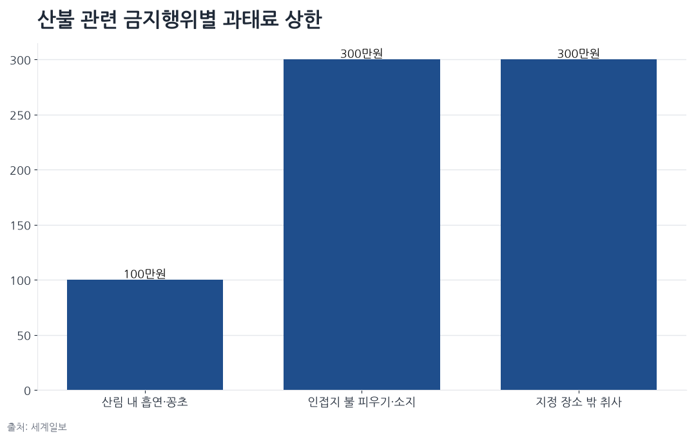

2026-11-28-1734-tistory 발행 키트 · 이 페이지는 검색에 노출되지 않습니다.
제목
카테고리
일상태그
본문 (그림·표 포함)
휴대폰 블로그 앱에서는 그림이 같이 붙지 않을 수 있어요. 그때는 [글자만 복사] 후 아래 이미지를 저장해 [그래프1]·[표1] 자리에 첨부하세요.
핵심 요약: 28일 건조한 날씨와 강풍 속에 전국에서 산불이 이어지자 산림청이 불법 소각 금지와 입산 시 화기 취급 주의를 당부했습니다. 같은 날 전남광주에는 강풍주의보가, 제주와 남해 해상에는 풍랑경보가 내려졌으므로 야외 활동과 시설물 관리에 주의가 필요합니다.
▶ 배경: 건조한 날씨와 강한 바람
산림청은 28일 새벽부터 세종을 포함한 여러 지역에서 산불이 발생했다고 밝혔습니다. 오후 1시 기준으로 경기, 세종, 강원, 경북에서 각각 1건씩 총 4건이 집계됐습니다.
공기가 마른 상태에서는 바람을 타고 불씨가 쉽게 옮겨붙기 때문에, 평소에는 문제가 되지 않던 행동도 대형 화재로 이어질 수 있습니다.
▶ 핵심 내용 1: 산림청 예방수칙
산림청이 안내한 수칙은 크게 두 갈래입니다. 하나는 소각 금지, 다른 하나는 입산자의 화기 취급 주의입니다.
소각이 금지되는 대상은 논·밭두렁, 영농부산물, 생활쓰레기입니다. 영농부산물은 관할 시·군·구 행정복지센터에 파쇄를 신청해 처리하는 방법이 안내됐습니다.
입산할 때는 라이터와 버너 같은 인화물질을 소지하지 말아야 하며, 흡연과 담배꽁초 투기도 해서는 안 됩니다. 취사는 지정된 장소에서만 가능합니다.
▶ 핵심 내용 2: 위반 시 과태료 상한
기사에 제시된 과태료 상한은 아래와 같습니다. 실제 부과액은 위반 정도와 지자체 판단에 따라 달라질 수 있으므로 상한 기준으로만 참고하시기 바랍니다.
산불·강풍 대비 확인표
| 무엇을 | 누가 | 어디서 확인 |
|---|---|---|
| 영농부산물 파쇄 신청 | 논·밭 작업 후 부산물이 생긴 분 | 관할 시·군·구 행정복지센터 |
| 인화물질 소지·흡연·취사 가능 구역 | 등산·입산 예정자 | 지정 취사장 등 현장 안내 |
| 여객선 운항 여부 | 섬·제주 이동 예정자 | 출발 전 해당 항로 운항 안내 |
| 간판·현수막 고정 상태 | 상가·건물 관리자 | 관리처와 소방당국 안내 |
출처: 세계일보, 연합뉴스
과태료 상한을 비교하면 다음과 같습니다.

▶ 영향: 강풍과 풍랑 특보
전남광주에서는 11개 시·군에 강풍주의보가 발효됐습니다. 오후 1시 기준 소방당국에 접수돼 조치된 강풍 관련 사례는 4건이며, 구례와 강진에서는 현수막과 간판 낙하 위험 신고가, 순천과 장흥에서는 나무 쓰러짐 신고가 있었습니다. 인명 피해는 없었습니다.
해상 상황도 좋지 않았습니다. 도서 지역 여객선은 43개 항로, 62척의 운항이 중단됐습니다.
기상청은 초속 15~20m의 강풍이 내일까지 이어지고 산지에서는 초속 25m 이상, 해안에서는 최대 2.5m의 물결이 예상된다고 밝혔습니다. 또한 28일 오후 6시를 기해 제주도 서부·동부·북부 앞바다와 남해동부바깥먼바다에 풍랑경보가 발효됩니다.
▶ 확인할 점
첫째, 영농부산물이나 쓰레기가 생겼다면 태우지 말고 거주지 행정복지센터에 파쇄 신청 절차를 문의합니다.
둘째, 산행 계획이 있다면 인화물질을 챙기지 않았는지, 취사 가능 구역이 어디인지 먼저 확인합니다.
셋째, 섬이나 제주로 이동할 예정이라면 출발 전에 해당 항로의 운항 여부를 확인합니다. 아파트 베란다와 가게 앞 간판, 현수막 등 바람에 날릴 수 있는 물건도 고정해 두는 것이 좋습니다.
▶ 정리
1. 건조·강풍 속에 28일 오후 1시까지 전국 4건의 산불이 확인됐고, 산림청이 예방수칙 준수를 당부했습니다.
2. 불법 소각과 산림 내 화기 사용은 과태료 대상이며, 영농부산물은 파쇄 신청으로 처리할 수 있습니다.
3. 강풍과 풍랑 특보 지역에서는 여객선 운항 여부와 시설물 고정 상태를 먼저 점검해야 합니다.
출처 (본문 맨 아래에 붙여넣기 권장)
- 세계일보, 전국서 산불 잇따라…산림청, 불법 소각금지 ‘국민 예방수칙’ 당부, https://www.segye.com/newsView/20261128505066 - 세계일보, 나무 쓰러지고 간판 흔들리고…강풍 몰아친 전남광주 피해 속출, https://www.segye.com/newsView/20261128504325 - 연합뉴스, 제주 서부 앞바다 등 3곳 풍랑경보, https://www.yna.co.kr/view/AKR20261128039200527 - 연합뉴스, 남해 동부 먼바다에 풍랑경보, https://www.yna.co.kr/view/AKR20261128039100527